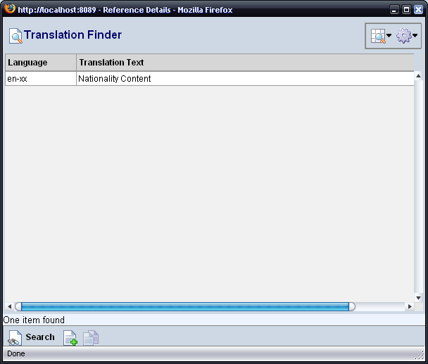
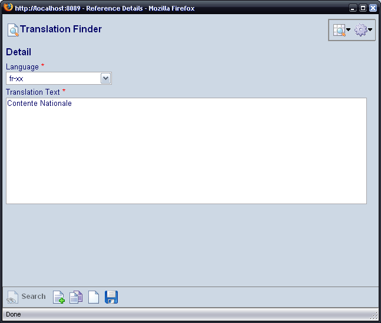

The Select Translation (Globe Icon) appears through the Catalog Application. Clicking the icon will launch the translation finder. All language translations for this field appear in this list.
|  |
Use the Add button to create a new translation. When adding translations, select the language and enter the translation text. Note: there can only be one translation per language. A new translation will overwrite the previous.
|  |